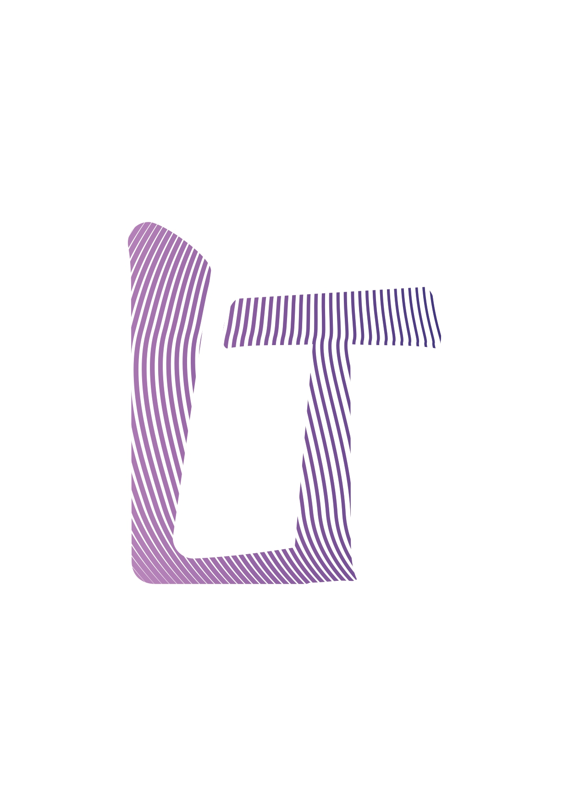
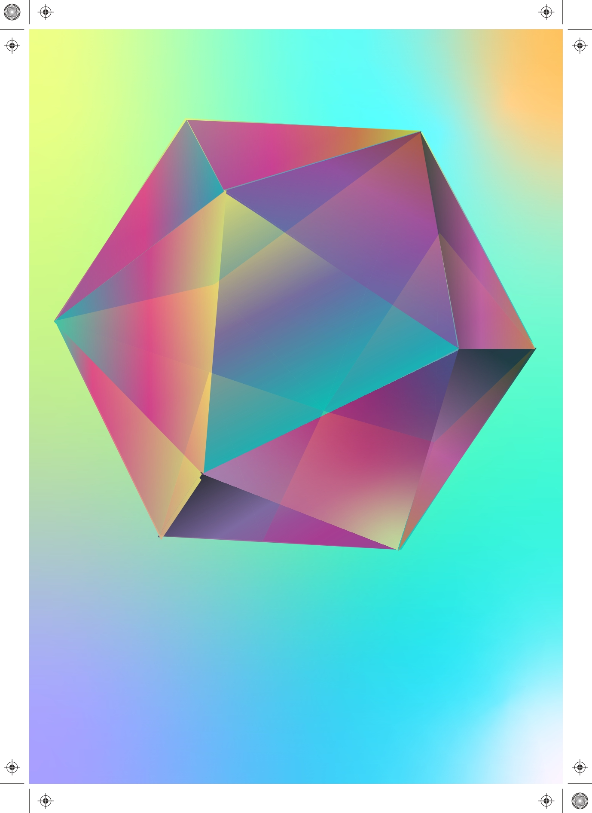
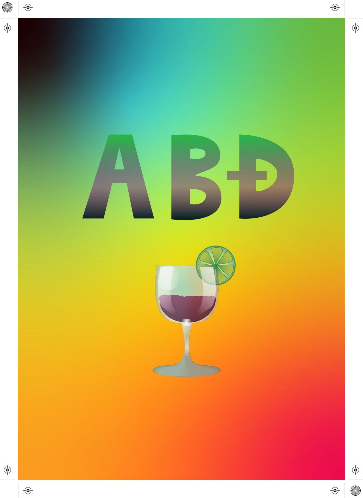
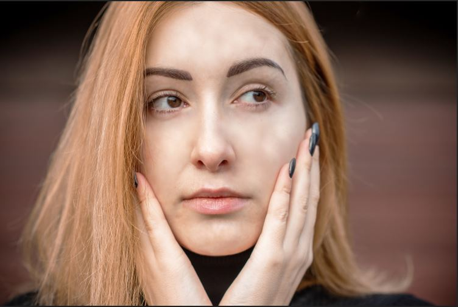
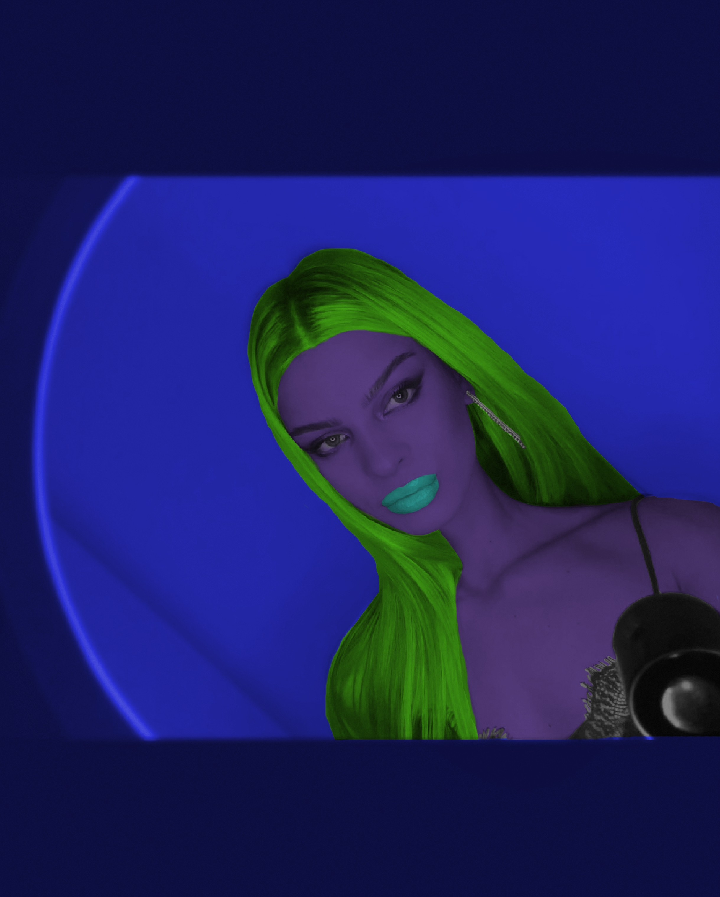
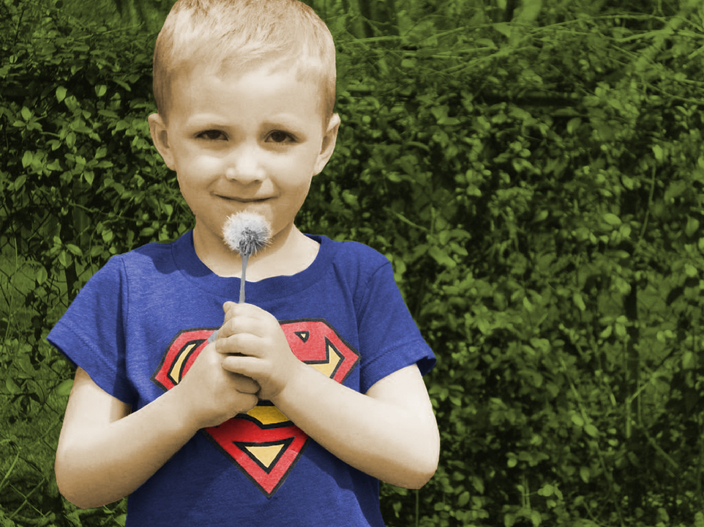
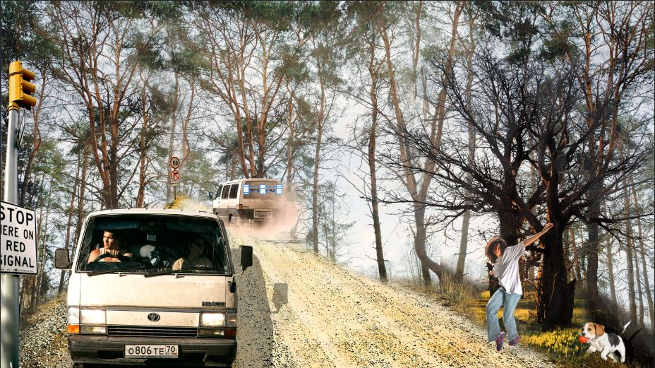

Vježbe
Ovdje su prikazani moji radovi s vježbi i projekata iz kolegija Digitalni multimedij.
Vježba 1 – Bezierove krivulje i rad s objektima
U ovoj vježbi izrađivani su vektorski oblici pomoću Bezierovih krivulja unutar zadanog koordinatnog sustava. Definirani su sivi tonovi ispune i obruba objekata te debljina linija. Korišteni su slojevi (Layers) za organizaciju elemenata, kao i automatsko crtanje objekata između zadanih oblika. Također je obrađeno pretvaranje teksta u vektorske objekte te izrada maski rezanjem.
Vježba 2 – Multipliciranje objekata i rad s bojama i uzorcima

U ovoj vježbi izrađen je vlastiti primjer s multipliciranim objektima nacrtanima alatom Pen, prema konturama odabrane slike predloška ili slobodnim crtanjem. Oblici su umnažani tehnikom dupliciranja (Alt / Duplicate) te su obojani različitim bojama definiranim u novoj Color (Swatch) grupi s najmanje pet vlastitih nijansi. U pozadini je primijenjen uzorak izrađen jednom od zadanih tehnika za izradu uzoraka.
Vježba 2.1 – Dodatni primjer (Pen + dupliciranje)

Drugi primjer vježbe fokusiran je na dodatno uvježbavanje crtanja alatom Pen i umnažanje elemenata dupliciranjem. Primijenjene su različite boje iz vlastite swatch palete i dekorativni uzorci u pozadini.
Vježba 3 – Složeni objekti, gradijenti i transparencija
U ovoj vježbi obrađena je izrada složenih grafičkih objekata koji se sastoje od više staza, koristeći metode spajanja (Unite, Compound Path) i oduzimanja oblika (Difference, Subtract). Primijenjene su različite vrste gradijenata (linearni, radijalni, mesh) s dvije ili više boja te efekti transparencije. Posebna pažnja posvećena je poretku slojeva pri izradi kompozicije.
Vježba 4 – Vlastiti font i ilustracija „PRIRODA“
U ovoj vježbi izrađen je vlastiti font kojim je oblikovana riječ „PRIRODA“, a zatim je kreirana ilustracija u formatu A3 prema zadanom predlošku pomoću Bezierovih krivulja. U radu su korištene swatch boje, gradijenti (linearni, radijalni i mesh), transparencija, interpolacija (blend), maskiranje te transformacije i umnažanje objekata, čime je izrađena složena i koloristički usklađena kompozicija.
Projekt 1 – Retuširanje fotografije
U ovom projektu obrađivana je odabrana fotografija korištenjem alata za selekciju i retuširanje u programu Adobe Photoshop. Primijenjene su tehnike izdvajanja objekata i dorade rubova (Select and Mask / Refine Edge) te korekcije detalja kako bi se postigao čišći i vizualno poboljšan konačni izgled slike.
Vježba 6 – Neinvazivno koloriranje i maske
U ovoj vježbi obrađene su tehnike neinvazivnog koloriranja fotografije, primjenjive na crno-bijele slike ili na fotografije u boji kojima se želi promijeniti nijansa određenih područja. Selekcijom dijelova slike izrađene su maske koje kontroliraju gdje je efekt kolorizacije vidljiv. Boja je dodavana putem zasebnih slojeva i Adjustment Layera, uz korištenje Magnetic Lasso Toola, Quick Mask moda, spremanja selekcija te Layer Maski.
Vježba 6.2 – Neinvazivno koloriranje (drugi primjer)
Drugi primjer koloriranja dodatno naglašava precizne ručne selekcije i rad s maskama, s ciljem postizanja kvalitetne i prirodne promjene boja bez oštećivanja originalne fotografije.
Vježba 7 – Fotomontaža i selekcije
U ovoj vježbi izrađena je fotomontaža kombiniranjem više fotografija izrezivanjem dijelova različitih slika i njihovim uklapanjem u jednu cjelinu. Korištene su tehnike selekcije jednostavnih i složenih oblika (kanali, Quick Mask, ručno dorađivanje maski), uz korekcije boja i izradu sjena kako bi se postigao realističan izgled.
Projekt 2 – Piksel grafika (kolokvij)

U ovom projektu izrađena je složena kompozicija kombiniranjem više fotografija primjenom tehnika retuširanja, fotomontaže i koloriranja. Elementi su precizno selektirani i uklopljeni u baznu fotografiju, a selekcije su spremljene kao kanali. Korištene su transformacije (Free Transform, Perspective, Vanishing Point), maske i korekcije boja, uz izradu realističnih sjena i transparencija. Tekst je uklopljen u kompoziciju pomoću perspektive.
Vježba 9 – Kinemagraf (Cinemagraph)
U ovoj vježbi izrađeni su kinemagrafi – spoj statične i pokretne slike u GIF formatu, pri čemu je većina kadra mirna, a samo jedan dio suptilno animiran. Posebna pažnja posvećena je odvajanju statičnih i pokretnih dijelova pomoću maski kako bi se dobio efekt beskonačne petlje.


Vježba 10 – Obrada videa i dodavanje efekata
U ovoj vježbi montirana su dva video isječka, dodani su video efekti, statični i animirani tekst te novi zvučni zapis.